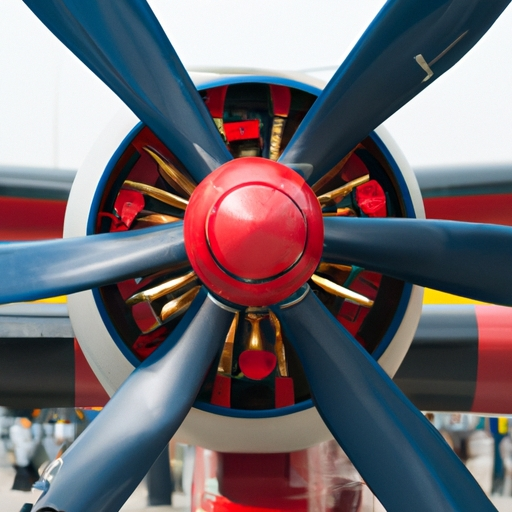
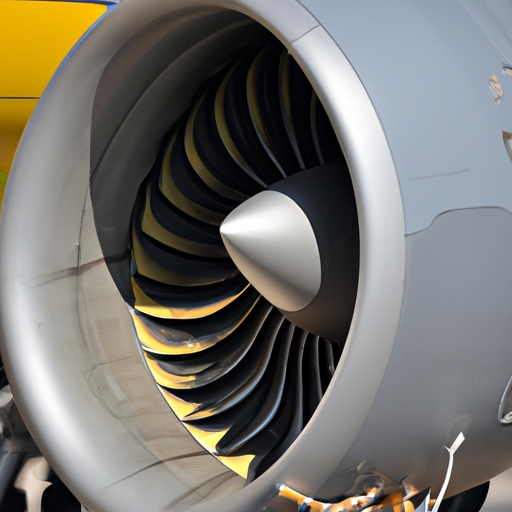

News
Services
What is the Difference Between Aircraft Detailing and Cleaning?
What is the Best Way to Get an Aircraft Professionally Detailed?
What are the Benefits of Professional Aircraft Detailing?
What Kinds of Products Are Used in Aircraft Detailing?
What Are the Most Important Steps for a Quality Aircraft Detail?
What Do You Need to Know Before Choosing an Aircraft Detailer?
What Should be Expected From a Professional Aircraft Detailing Service?
What Makes Professional Aircraft Detailing Different Than DIY Options?
What Are Some Common Mistakes People Make When Doing Their Own Aircraft Detailing?
How Long Does It Take to Complete an Average Aircraft Detail Job?
Why Is It Important to Have Regular Maintenance and Professional Cleanings Done On Your Aircraft?
How Can Professional Aviation-Specific Products Enhance Your Aircraft's Appearance and Performance After a Detail Job?
What Are The Advantages Of Using A Professional Team For An Airplane Detail Compared To Doing It Yourself At Home Or Doing Nothing At All?
How to Make Your Aircraft Shine Like New with Professional Detailing
How to Get the Most Out of Aircraft Detailing Services
How to Keep Your Aircraft Looking Great with Regular Detailing
How to Find the Best Deals on Professional Aircraft Detailing Services
How to Transform Your Aircraft with Professional, Quality Detailing
How to Prepare for a Professional Aircraft Detail Service
How to Make Sure You Get the Highest Quality Results from an Aircraft Detailer
How to Choose the Right Company for All of Your Aircraft Detailing Needs
About Us
News
10.How to Get Started With an Expertly-Done Aircraft Detail Job Today!
Getting started with an expertly-done aircraft detail job today can be a daunting task, but it's doable!. First and foremost, you'll need to make sure the aircraft is thoroughly cleaned.
Posted by
on 2023-06-18

11.How to Save Money While Still Getting Premium Results From an Aviation Detailer
It can be difficult to find an aviation detailer who offers quality results at a reasonable price.. But, it's not impossible!
Posted by
on 2023-06-18
12.How To Keep Your Plane Looking Its Best With Professional Aviation Cleaning & Detailing Services
Maintaining the appearance of your plane with professional aviation cleaning and detailing services is an important part of keeping it looking its best.. With regular check-ups and upkeep, your plane can remain in top condition for many years to come!
Posted by
on 2023-06-18
13.How To Trust The Professionals For A Perfect Finish On Your Private Jet Or Helicopter
Refinishing a private jet or helicopter is no small task!. It can be quite intimidating to trust professionals for the perfect finish, but it's necessary in order to keep up with maintenance and repairs.
Posted by
on 2023-06-18
Applying Protective Coatings to an Aircraft Exterior
The application of protective coatings to an aircraft exterior is a necessary step in order to preserve the lifespan of the aircraft and maintain its quality.. They provide a barrier against the elements, preventing corrosion and damage caused by water, dirt, and UV light.
Posted by
on 2023-06-18

Best Practices for Detailing Different Types of Airplanes
Inspecting completed work on airplanes is an essential best practice.. It's crucial to check each part of the plane thoroughly before signing off.
Posted by
on 2023-06-18
Choosing the Right Products and Supplies for Aircraft Detailing
Choosing the right products and supplies for aircraft detailing can be a daunting task!. With so many options on the market today, it's hard to determine which ones are best.
Posted by
on 2023-06-18
Common Challenges Faced When Detailing the Interior of a Jetliner
Detailing the interior of a jetliner can be an incredibly challenging task!. Aside from all of the technical aspects that must be taken into account, one of the most difficult challenges is dealing with time-sensitive deadlines.
Posted by
on 2023-06-18
How to Polish Aluminum Surfaces on an Aircraft
Polishing aluminum surfaces on an aircraft is easy and rewarding!. First, (you'll) need to gather the necessary materials: a mild detergent, a soft rag, some aluminum polish, and elbow grease.
Posted by
on 2023-06-18
How to Protect and Enhance the Look of Your Aircraft Through Detailing Services
Protecting and enhancing the look of your aircraft through detailing services can be a daunting task.. But(,) it doesn't have to be!
Posted by
on 2023-06-18
Interior Cleaning of an Aircraft: What You Need to Know
Interior cleaning of an aircraft is a complex process that requires attention to detail and knowledge regarding the materials used on board. (Negation) Not every person can do it, and the results may be unsatisfactory if done by someone without the necessary expertise.. To successfully complete this task, you need to have a checklist of things to consider when tackling interior aircraft cleaning.
First and foremost, you must be aware of what type of material is being used in the cabin so as to avoid damaging them while cleaning.
Posted by
on 2023-06-18
Keeping Up with Maintenance Requirements During Aircraft Detailing Projects
Aircraft detailing projects can be very demanding when it comes to keeping up with maintenance requirements.. Not adhering to these regulations (can result in) serious consequences!
Posted by
on 2023-06-18
Preparing Your Aircraft for Detailing
Preparing your aircraft for detailing is an essential process before taking off!. It requires several steps to ensure a clean and safe flight.
Posted by
on 2023-06-18
Removing Stains from Upholstery and Carpeting in Your Plane
Maintaining regular cleanings and inspections of your plane's upholstery and carpeting is essential for keeping it looking sharp!. It also allows you to spot any potential stains that may set in before they become permanent fixtures.
Posted by
on 2023-06-18
Simple Strategies for Dealing with Corrosion on an Airplane’s Surface
Dealing with corrosion on an airplane's surface can be a daunting task.. But it doesn't have to be!
Posted by
on 2023-06-18
Steps Involved in Cleaning an Aircraft Exterior
Cleaning an aircraft exterior is a difficult job!. But it's worth the effort; afterall, a clean plane means happy passengers and a safe flight.
Posted by
on 2023-06-18
The Basics of Aircraft Detailing
Aircraft detailing is an important aspect of aircraft maintenance and upkeep.. It involves cleaning, polishing, waxing and more to ensure that an aircraft looks its best. (There's) no doubt that aircraft detailing is a complex process but it can be broken down into several basic steps.
Posted by
on 2023-06-18
Tips for Maintaining a Spotless Cockpit Environment in Your Plane
Inspecting the cockpit for wear or damage is an essential part of maintaining a spotless cockpit enviroment in your plane.. It's important to check every nook and cranny both inside and outside to ensure nothing has been left unchecked.
Posted by
on 2023-06-18
Old Posts
New Posts